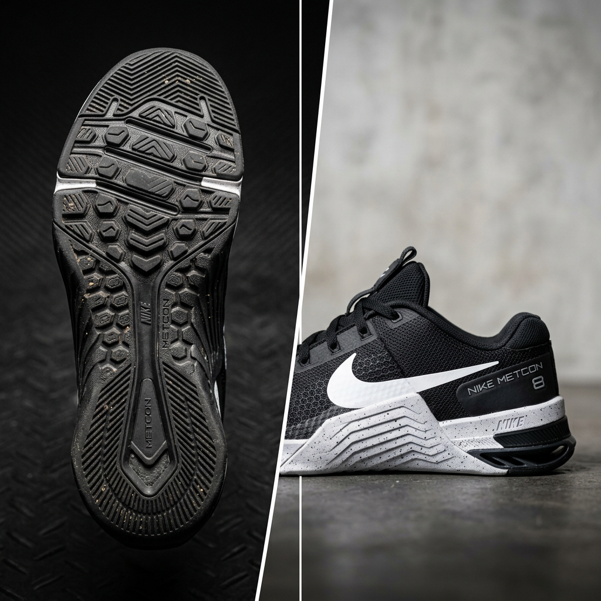
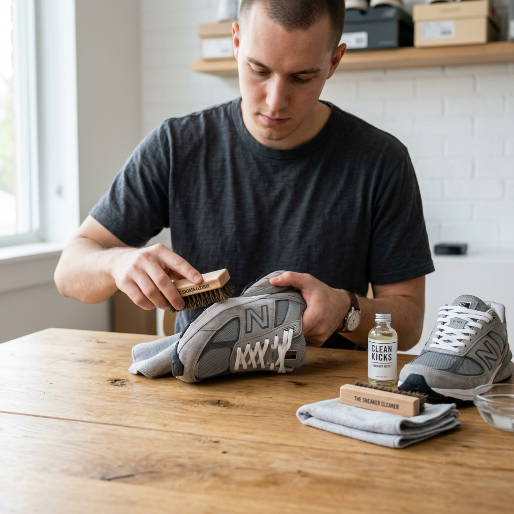

The Ultimate Guide to Deion Sanders Shoes: Dominating the Field and the Street
The Legacy of Prime Time: Why Deion Sanders Shoes Define an Era
In the world of athletic footwear, few names carry as much weight as "Prime Time." Deion Sanders didn't just play sports; he revolutionized the concept of the multi-sport athlete, and his footwear had to keep up. If you are searching for deion sanders shoes, you aren't just looking for a pair of sneakers—you are looking for a piece of history that combines high-performance cross-training technology with an unmistakable street-ready aesthetic.
The problem most athletes and collectors face today is finding a shoe that bridges the gap between functional training and iconic style. Generic trainers often lack the lateral support needed for explosive movements, while lifestyle sneakers fail to provide the durability required for the turf. This is where the Deion Sanders signature line, specifically the legendary Diamond Turf series, enters the arena. It was designed for the man who played two professional sports on the same day, demanding a level of versatility that remains unmatched in the industry.
The Anatomy of an Icon: Key Features of Deion Sanders Footwear
When evaluating deion sanders shoes, it is essential to understand the technical innovations that made them a staple in both the locker room and the urban landscape. These shoes were engineered to handle the rigors of football drills and the demands of the baseball diamond simultaneously.
1. The Signature Midfoot Strap
Perhaps the most recognizable feature of the line is the robust midfoot strap. This wasn't just for show; it provided the lockdown support necessary for high-intensity lateral cuts. For the high-intent buyer, this feature ensures that the foot remains secure, reducing the risk of slippage during explosive movements.
2. Aggressive Outsole Traction
The outsole of a classic Deion Sanders trainer is designed for multi-surface dominance. Whether you are on artificial turf, grass, or the pavement, the specialized lug patterns offer superior grip. This makes them the ideal choice for individuals who transition between different training environments.
3. Bold Color Blocking and Aesthetics
Deion Sanders famously said, "Look good, feel good, play good." The design language of his shoes reflects this philosophy. With bold color palettes and aggressive lines, these shoes are designed to stand out. They embody the confidence of a Hall of Famer, making them a top choice for those who want their footwear to make a statement.

Choosing the Right Pair: Performance vs. Lifestyle
When you are in the market for deion sanders shoes, your choice should be dictated by your primary use case. Because the line has seen various iterations and retros, understanding the nuances can help you make a better investment.
- The Performance Athlete: If you intend to use these for actual training, look for models that emphasize the "Diamond Turf" technology. Focus on pairs that offer reinforced ankle collars and responsive cushioning systems that can absorb impact during sprints.
- The Sneaker Collector: For those focused on the aesthetic and historical value, the original colorways (OG) are the gold standard. Pay close attention to the materials, as premium leather and nubuck overlays are hallmarks of the high-quality retro releases.
- The Daily Wearer: If versatility is your goal, the mid-top silhouettes provide the perfect balance of comfort and ankle support for all-day wear.
How to Maintain Your Investment
High-quality athletic footwear requires proper care to maintain its value and performance. Since many deion sanders shoes feature a mix of synthetic materials and genuine leather, a specialized cleaning kit is recommended. Avoid machine washing, as this can break down the adhesives and ruin the structural integrity of the midfoot strap. Instead, use a soft-bristled brush for the upper and a stiffer brush for the outsole to remove debris from the traction lugs.

Final Verdict: Are Deion Sanders Shoes Right for You?
The enduring popularity of Deion Sanders' footwear is a testament to its superior design and the legendary status of the man himself. These are not just shoes; they are a tool for peak performance and a symbol of athletic excellence. Whether you are hitting the gym for a high-intensity workout or looking to elevate your street style, the Diamond Turf legacy offers something that modern, homogenized trainers simply cannot match.
If you value versatility, bold design, and a proven track record of performance, adding a pair of these iconic trainers to your rotation is a decision backed by decades of athletic success. Remember: when you step into a pair of deion sanders shoes, you aren't just wearing a brand—you're wearing a mindset.